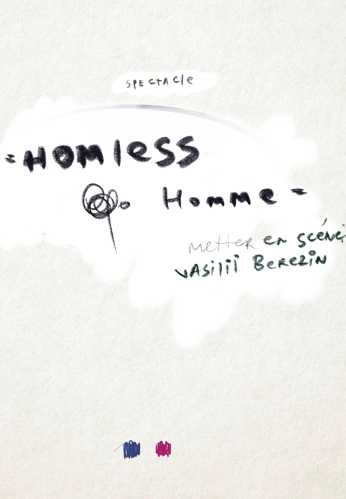
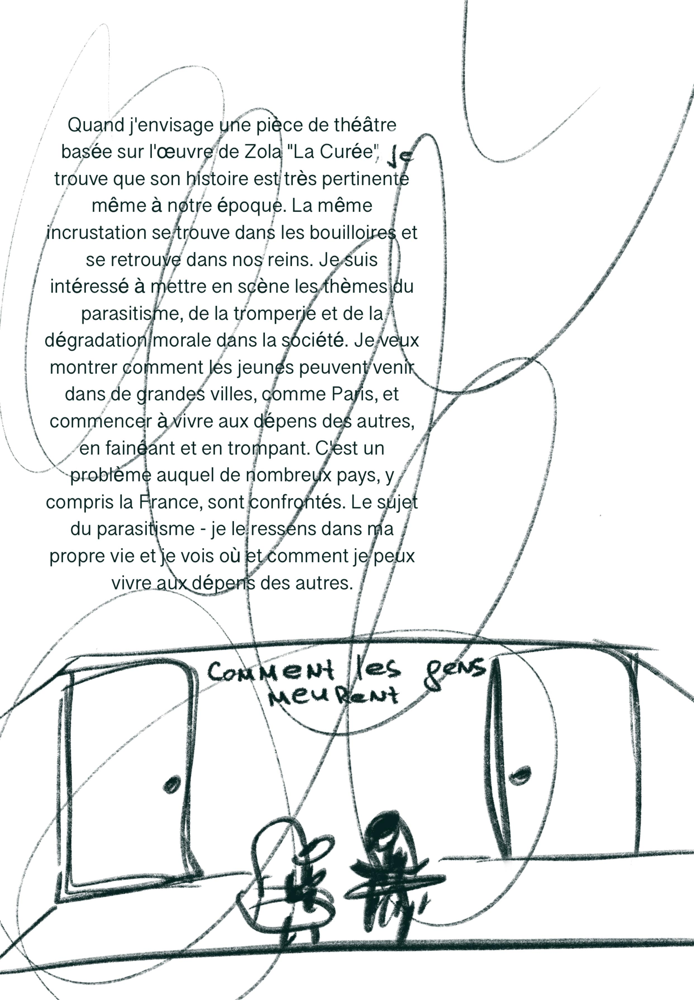
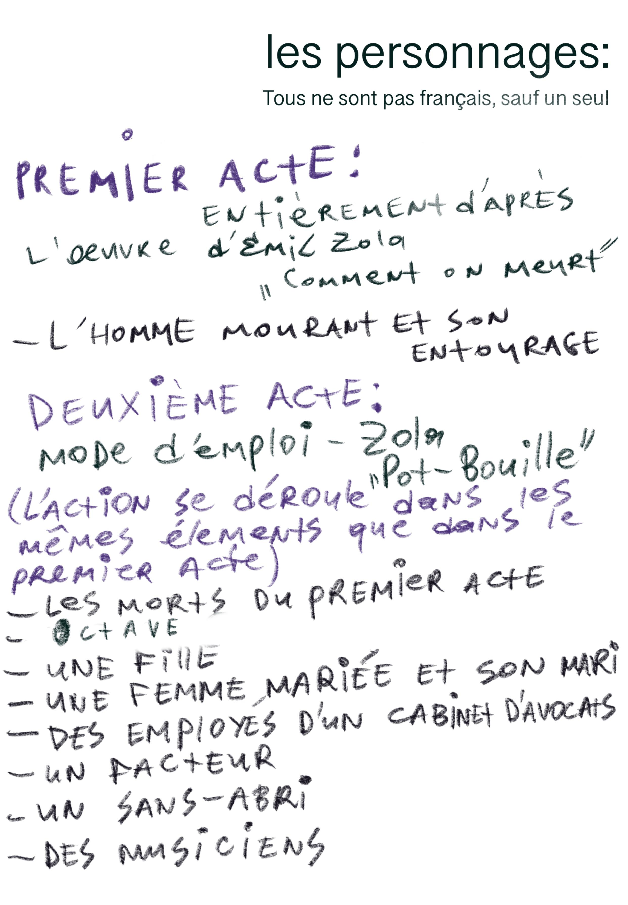
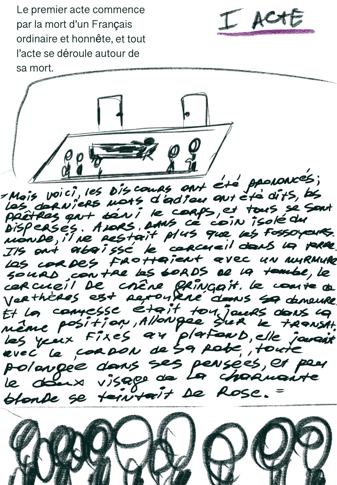
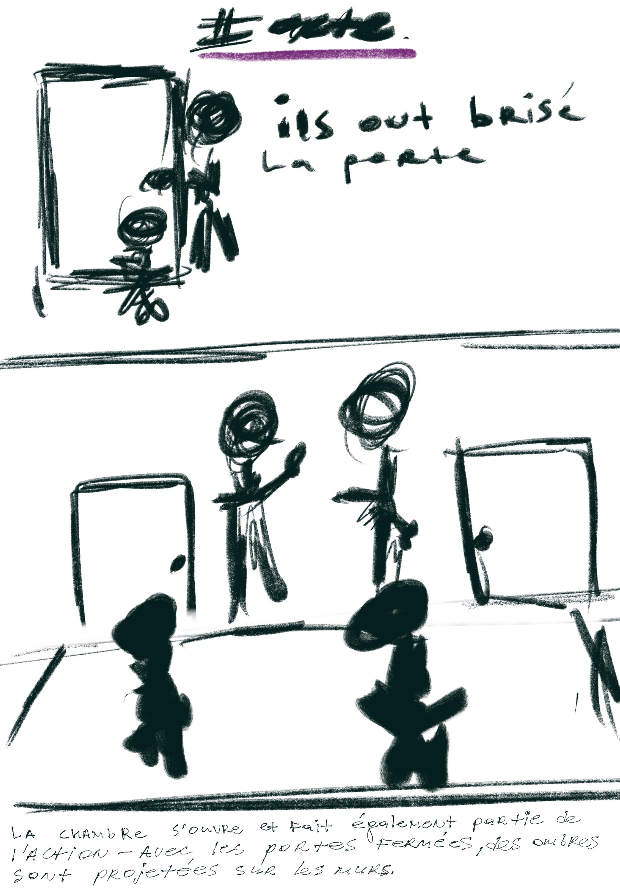
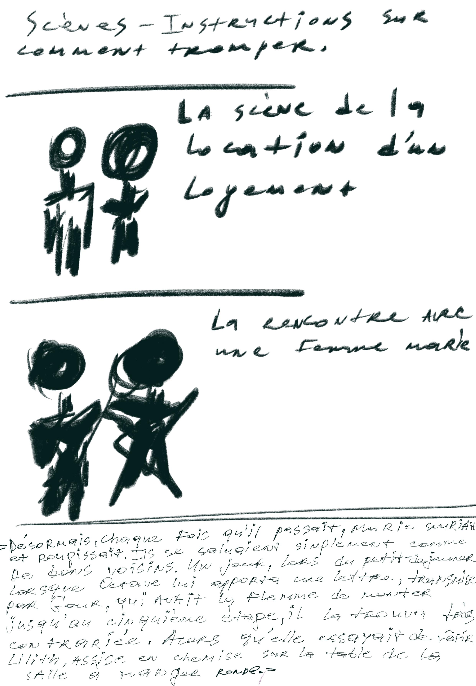
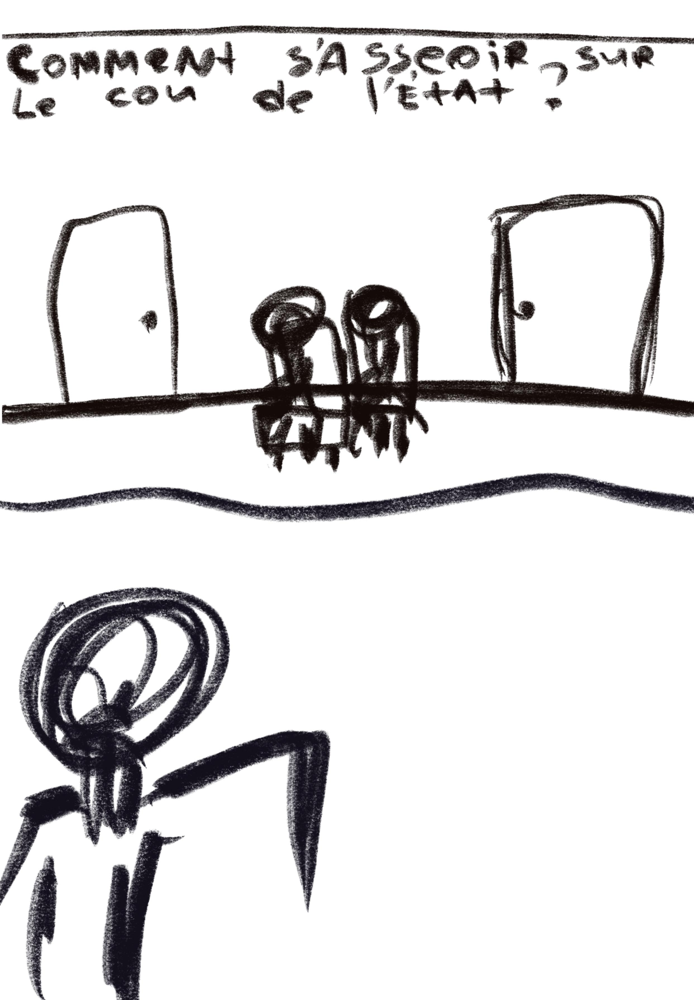

Vous avez vu cet immeuble. Cinq étages, des balcons en fer forgé, une porte cochère, un escalier de service à l'arrière. Vous l'avez vu de l'extérieur. Vous n'avez jamais vu ce qui se passe à l'intérieur. You have seen that building. Five floors, wrought-iron balconies, a porte cochère, a service stair at the back. You have seen it from outside. You have never seen what happens within. Вы видели этот дом. Пять этажей, балконы кованого железа, парадная, чёрный ход. Вы видели его снаружи. Вы никогда не видели, что происходит внутри. — En guise d'avertissement — By way of warning — Вместо предисловия
d'après Émile Zola · adaptation et mise en scène Vasilii Berezin after Émile Zola · adapted and directed by Vasilii Berezin по Эмилю Золя · адаптация и режиссура Василий Березин
Un immeuble. Six étages. Quinze adultères. Quatre suicides évités. Trois domestiques humiliées. Et l'escalier en marbre qui ne dit rien. A building. Six floors. Fifteen affairs. Four suicides avoided. Three humiliated servants. And a marble staircase that says nothing. Дом. Шесть этажей. Пятнадцать измен. Четыре несостоявшихся самоубийства. Три униженные служанки. И мраморная лестница, которая ничего не говорит.
Pot-Bouille est le neuvième tome des Rougon-Macquart, publié par Émile Zola en 1882. Le roman observe à hauteur d'escalier la vie d'un immeuble bourgeois rue de Choiseul, dans le neuvième arrondissement de Paris. Octave Mouret, jeune provincial monté à la capitale, traverse les étages, séduit les femmes, échoue, recommence. Au-dessus, la respectabilité ; en-dessous, les domestiques. Entre les deux, l'escalier — ce muet de marbre qui sait tout, qui ne dit rien.
Zola a posé son microscope sur le mensonge bourgeois quotidien. Il n'a pas écrit un livre moral ; il a écrit une autopsie. C'est ce qui le rend intolérable — et lisible aujourd'hui.
Pot-Bouille is the ninth volume of the Rougon-Macquart, published by Émile Zola in 1882. The novel watches from the height of the stairwell the life of a bourgeois building on rue de Choiseul, in the ninth arrondissement of Paris. Octave Mouret, a young provincial come up to the capital, crosses the floors, seduces women, fails, starts again. Above, respectability; below, the servants. Between them, the staircase — a marble mute that knows everything and says nothing.
Zola placed his microscope on the everyday bourgeois lie. He did not write a moral book; he wrote an autopsy. That is what makes it unbearable — and readable today.
Накипь — девятый том Ругон-Маккаров, изданный Эмилем Золя в 1882 году. Роман смотрит с высоты лестничной клетки на жизнь буржуазного дома в улице Шуазёль, в девятом округе Парижа. Октав Муре, молодой провинциал, приехавший в столицу, проходит этажи, соблазняет женщин, проваливается, начинает снова. Над ним — респектабельность; под ним — слуги. Между ними — лестница, мраморный немой, который всё знает и ничего не говорит.
Золя поставил микроскоп на ежедневную буржуазную ложь. Он не писал моральную книгу; он писал вскрытие. Именно это делает её невыносимой — и читаемой сегодня.

Mon adaptation est resserrée en deux actes, pour quatre rôles principaux et six secondaires. Elle transpose la mécanique sociale de 1882 dans un dispositif scénique contemporain — sans changer d'époque, sans actualiser les costumes, sans toutes ces ruses. Ce qui change est plus radical : le regard.
Là où Zola, en 1882, s'indignait, je documente. Là où il moralisait à voix haute, je laisse parler le silence du marbre. Le geste théâtral ne dénonce pas — il désincarne la scène domestique pour la rendre lisible comme un fragment de protocole.
Le procédé est proche de celui que Konstantin Bogomolov a développé au MKhAT et que j'ai pratiqué dans son atelier à Moscou (2016-2018) : tenir le texte à distance par la précision du geste, faire de la dramaturgie une affaire d'arpenteurs.
My adaptation is condensed into two acts, for four principal roles and six supporting. It transposes the social mechanics of 1882 into a contemporary stage device — without changing the period, without updating the costumes, without any of those tricks. What changes is more radical: the gaze.
Where Zola, in 1882, was indignant, I document. Where he moralised aloud, I let the silence of the marble speak. The theatrical gesture does not denounce — it disembodies the domestic scene so as to make it readable as a fragment of protocol.
The procedure is close to what Konstantin Bogomolov developed at the MKhAT and which I practised in his workshop in Moscow (2016-2018): holding the text at a distance through the precision of gesture, turning dramaturgy into a surveyor's business.
Моя адаптация сжата до двух актов, на четыре главные роли и шесть второстепенных. Она переносит социальную механику 1882 года в современный сценический dispositif — не меняя эпоху, не обновляя костюмы, без всех этих хитростей. Меняется более радикальное: взгляд.
Там, где Золя в 1882 году возмущался, я документирую. Там, где он морализирует вслух, я даю заговорить тишине мрамора. Театральный жест не обличает — он обездушивает бытовую сцену, чтобы сделать её читаемой как фрагмент протокола.
Метод близок тому, что Константин Богомолов разработал во МХАТе и что я практиковал в его мастерской в Москве (2016-2018): держать текст на дистанции точностью жеста, превращать драматургию в дело землемеров.


Le projet sera mis en plateau pendant ma résidence à la Fondation Fiminco, dans le quartier Komunuma à Romainville (Grand Paris) — ancien site industriel reconverti en quartier d'art contemporain. C'est le double inversé du décor zolien : là où Zola peignait un immeuble bourgeois sous le regard de l'écrivain, je peindrai la classe artistique elle-même se regardant dans un cadre industriel reconverti.
Les espaces communs du bâtiment FAST de la Fondation — escalier de service, kitchenette partagée, terrasse — deviendront décors trouvés. Les rôles secondaires seront portés par certains artistes en résidence parallèles (visual arts, métiers d'art) : c'est-à-dire que le public regardera des artistes contemporains jouer des bourgeois de 1882, dans un bâtiment industriel reconverti en lieu d'art. Ce dispositif transforme le geste théâtral en geste documentaire sur l'auto-représentation de la classe artistique.
The project will be staged during my residency at the Fondation Fiminco, in the Komunuma district of Romainville (Greater Paris) — a former industrial site reconverted into a contemporary-art neighborhood. This is the inverse double of Zola's décor: where Zola painted a bourgeois building under the writer's gaze, I will paint the artistic class itself watching itself in a reconverted industrial setting.
The communal spaces of the Foundation's FAST building — service stair, shared kitchenette, terrace — will become found decors. The supporting roles will be carried by some of the parallel residents (visual arts, métiers d'art): that is, the public will watch contemporary artists play 1882 bourgeois figures, in an industrial building reconverted into a place of art. The device turns the theatrical gesture into a documentary gesture on the self-representation of the artistic class.
Проект будет выведен на сцену во время моей резиденции в Fondation Fiminco, в квартале Komunuma в Romainville (Большой Париж) — бывший индустриальный участок, переустроенный в квартал современного искусства. Это обратный двойник декорации Золя: там, где Золя писал буржуазный дом под взглядом писателя, я напишу самих художников, наблюдающих себя в промышленной среде.
Общие пространства здания FAST Фондации — чёрная лестница, общая кухонька, терраса — станут найденной декорацией. Второстепенные роли исполнят некоторые из параллельных резидентов (visual arts, métiers d'art): то есть публика увидит, как современные художники играют буржуа 1882 года в промышленном здании, переустроенном в место искусства. Этот dispositif превращает театральный жест в документальный жест об автопрезентации класса художников.

L'escalier est en marbre. Il sait tout. Il ne dit rien. The staircase is of marble. It knows everything. It says nothing. Лестница из мрамора. Она знает всё. Она ничего не говорит.
Adaptation, mise en scène et conception scénographique : Vasilii Berezin. Quatre rôles principaux et six secondaires en cours de distribution.
Structure porteuse : Association Microcrédit (loi 1901, Noisy-le-Grand) — microcredit.art.
Soutiens identifiés : Fondation Fiminco × Adami (résidence La Fabrique des Arts Vivants 2027), Kone Foundation (via Binary BioTheater), DRAC Île-de-France (en cours).
Adaptation, direction and stage design: Vasilii Berezin. Four principal roles and six supporting roles being cast.
Producing structure: Association Microcrédit (loi 1901, Noisy-le-Grand) — microcredit.art.
Identified supports: Fondation Fiminco × Adami (La Fabrique des Arts Vivants residency 2027), Kone Foundation (via Binary BioTheater), DRAC Île-de-France (in progress).
Адаптация, режиссура и сценография: Василий Березин. Четыре главные роли и шесть второстепенных в работе.
Структура-носитель: Association Microcrédit (loi 1901, Noisy-le-Grand) — microcredit.art.
Партнёры: Fondation Fiminco × Adami (резиденция La Fabrique des Arts Vivants 2027), Kone Foundation (через Binary BioTheater), DRAC Île-de-France (в работе).

